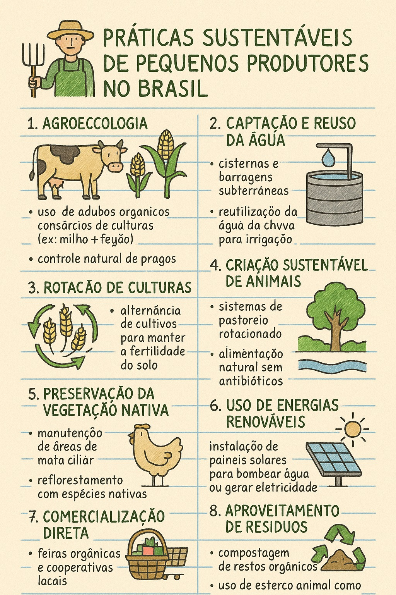
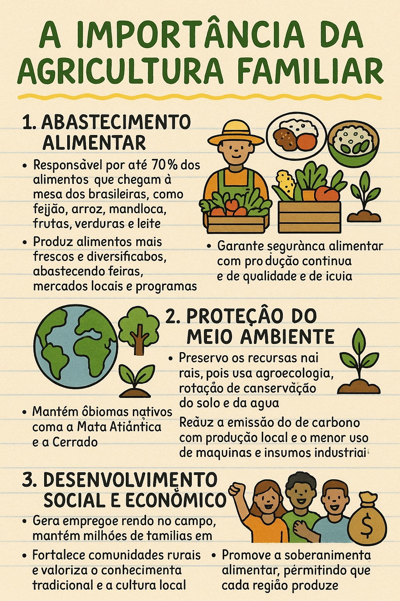

Área Educativa
Infográficos sobre sustentabilidade e agricultura familiar, além de quizzes interativos para todos os públicos!
🌱 Sustentabilidade no Campo
Infográfico mostrando práticas sustentáveis adotadas por pequenos produtores no Brasil.
🖼️ Práticas Sustentáveis
Confira este infográfico que mostra boas práticas adotadas por pequenos produtores no Brasil:
👨👩👧👦 Agricultura Familiar
Conheça a importância da agricultura familiar para o abastecimento alimentar e o meio ambiente.
🖼️ importância da agricultura familiar
Confira este infográfico que mostra boas práticas adotadas por pequenos produtores no Brasil:
🧠 Quiz Interativo
Teste seus conhecimentos sobre o campo e seus impactos na vida urbana de forma divertida e educativa.
Quiz 1: Sustentabilidade
Qual destas práticas é considerada sustentável no campo?
Quiz 2: Agricultura Familiar
A agricultura familiar é importante porque: